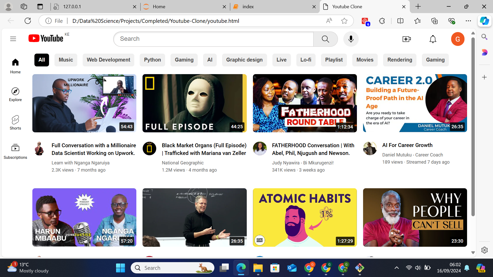

This project is a study of customer churn and how it can be predicted using machine learning.
This project is a study of the movies statistics and the strategies on which genre to produce.
This project is a study of real estate prices and conditions that are marketable.
This project is a study on movie data and algorithms to recommend movies to users.
This project is a study on wind farm data and optimization strategies in Kenya.
This was just a basic practice of duplicating the YouTube interface from observation.
This project is a study on plant disease prediction using machine learning. I am currently working on improving the web app.
This project is a study on fake passport detection using machine learning. I am still in the research phase and working on data collection.
This project is a study on sales made during various periods. The project will soon be complete with the appropriate machine learning algorithm.